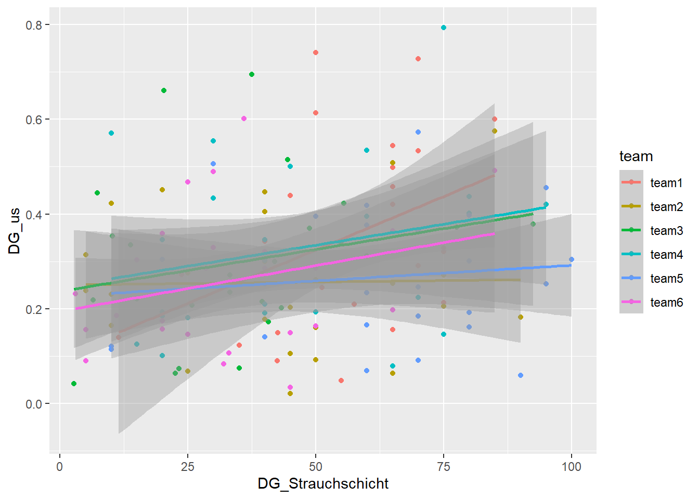

#.##################################################################################
# Daten(vor)verarbeitung Fallstudie WPZ ####
# Modul Research Methods, HS22. Autor/in ####
#.##################################################################################
# Beschreibt zudem folgendes:
# • Ordnerstruktur; ich verwende hier den Projektordner mit den Unterordnern:
# • Skripts
# • Data
# • Results
# • Plots
# • Verwendete Daten
# Ein Skript soll in R eigentlich immer nach dem selbem Schema aufgebaut sein.
# Dieses Schema beinhaltet (nach dem bereits erwähnten Kopf des Skripts) 4 Kapitel: 2. Daten(vor)verarbeitung - Lösung
Projektaufbau RStudio-Projekte
Vor den eigentlichen Auswertungen müssen einige vorbereitende Arbeiten unternommen werden. Die Zeit, die man hier investiert, wird in der späteren Projektphase um ein vielfaches eingespart. Im Skript soll die Ordnerstruktur des Projekts genannt werden, damit der Arbeitsvorgang auf verschiedenen Rechnern reproduzierbar ist.
Arbeitet mit Projekten, da diese sehr einfach ausgetauscht und somit auch reproduziert werden önnen; es gibt keine absoluten Arbeitspfade sondern nur relative. Der Datenimport (und auch der Export) kann mithilfe dieser relativen Pfaden stark vereinfacht werden. Projekte helfen alles am richtigen Ort zu behalten. (mehr zur Arbeit mit Projekten: Link)
Aufbau von R-Skripten
Im Kopf des Skripts zuerst immer den Titel des Projekts sowie die Autor:innen des Skripts nennen. Hier soll auch die Herkunft der Daten ersichtlich sein und falls externe Daten verwendet werden, sollte geklärt werden, wer die Datenherrschaft hat (Rehdaten: Forschungsgruppe WILMA).
- Datenimport
- Datenvorverarbeitung
- Analyse
- Visualisierung
Bereitet euer Skript also nach dieser Struktur vor. Nutzt für den Text, welcher nicht Code ist, vor dem Text das Symbol #. Wenn ihr den Text als Titel definieren wollt, der die grobe Struktur des Skripts absteckt, baut in wie in folgendem Beispiel auf:
#.###################################################################################
# METADATA ####
#.###################################################################################
# Datenherkunft ####
# ...
#.###################################################################################
# 1. DATENIMPORT ####
#.###################################################################################Libraries laden
library(tidyverse)Daten laden
Herunterladen der Daten der Feldaufnahme von Moodle, Einlesen, Sichtung der Datensätze und der Datentypen.
df_team1 <- read_delim("fallstudie_n/data/Felderhebungen_Waldstruktur.csv", delim = ";")
df_team2 <- read_delim("fallstudie_n/data/Felderhebung_11102022_gr3.csv", delim = ";")
df_team3 <- read_delim("fallstudie_n/data/Felderhebung_Waldstruktur_TEAM3_pink_Gruppe 7.csv", delim = ";")
df_team4 <- read_delim("fallstudie_n/data/Felderhebungen_Team4_Blau_221011.csv",delim = ";")
df_team5 <- read_delim("fallstudie_n/data/Felderhebung TEAM 5.csv", delim = ";")
df_team6 <- read_delim("fallstudie_n/data/Team6_Felderhebung.csv", delim = ";")
# hier können die Probekreise mit den Angaben zur Anzahl Rehlokalisationen und der
# LIDAR-basierten Ableitung der Waldstruktur eingelesen werden
df_reh <- read_delim("fallstudie_n/data/Aufgabe3_Reh_Waldstruktur_221013.csv", delim = ";")
str(df_reh)spec_tbl_df [305 × 5] (S3: spec_tbl_df/tbl_df/tbl/data.frame)
$ Anz_reh_lokalisationen: num [1:305] 0 0 0 0 0 0 0 0 0 0 ...
$ x : num [1:305] 684900 684900 684900 684900 684875 ...
$ y : num [1:305] 237100 237125 237150 237175 237075 ...
$ DG_us : num [1:305] 0.0903 0.2717 0.468 0.7407 0.1811 ...
$ DG_os : num [1:305] 0.908 0.959 0.871 0.986 0.86 ...
- attr(*, "spec")=
.. cols(
.. Anz_reh_lokalisationen = col_double(),
.. x = col_double(),
.. y = col_double(),
.. DG_us = col_double(),
.. DG_os = col_double()
.. )
- attr(*, "problems")=<externalptr> # Die eingelesenen Datensätze anschauen und versuchen zu einem Gesamtdatensatz
# verbinden. Ist der Output zufriedenstellend?
df_gesamt <- bind_rows(df_team1, df_team2, df_team3, df_team4, df_team5, df_team6)
str(df_gesamt)spec_tbl_df [150 × 11] (S3: spec_tbl_df/tbl_df/tbl/data.frame)
$ Kreis (r 12.5m) : num [1:150] 0 1 2 3 4 5 6 7 8 9 ...
$ X : num [1:150] 684900 684875 684875 684875 684850 ...
$ Y : num [1:150] 237175 237125 237175 237250 237225 ...
$ Deckungsgrad Rubus sp. [%] : num [1:150] 1 72.5 15 25 15 25 30 60 85 65 ...
$ DG Strauchschicht [%] (0.5-3m): num [1:150] 50 57.5 65 45 65 70 75 65 65 35 ...
$ DG Baumschicht [%] (ab 3m) : num [1:150] 90 55 85 65 70 80 80 50 60 70 ...
$ Kreis : num [1:150] NA NA NA NA NA NA NA NA NA NA ...
$ x : num [1:150] NA NA NA NA NA NA NA NA NA NA ...
$ y : num [1:150] NA NA NA NA NA NA NA NA NA NA ...
$ Deckungsgrad Rubus sp [%] : num [1:150] NA NA NA NA NA NA NA NA NA NA ...
$ DG Rubus sp. [%] : num [1:150] NA NA NA NA NA NA NA NA NA NA ...
- attr(*, "spec")=
.. cols(
.. `Kreis (r 12.5m)` = col_double(),
.. X = col_double(),
.. Y = col_double(),
.. `Deckungsgrad Rubus sp. [%]` = col_double(),
.. `DG Strauchschicht [%] (0.5-3m)` = col_double(),
.. `DG Baumschicht [%] (ab 3m)` = col_double()
.. )
- attr(*, "problems")=<externalptr> Aufgabe 1
1.1 Einügen zusätzliche Spalte pro Datensatz mit der Gruppenzugehörigkeit (Team1-6). 1.2 Spaltenumbenennung damit die Bezeichungen in allen Datensätzen gleich sind und der Gesamtdatensatz zusammengefügt werden kann. –> Befehle mutate und rename, mit pipes (alt: %>%, neu: |>) in einem Schritt möglich
#.#################################################################################
# 2. DATENVORVERARBEITUNG #####
#.#################################################################################
df_team1 <- df_team1 |>
mutate(team = "team1") |>
rename(KreisID = "Kreis (r 12.5m)",
DG_Rubus = "Deckungsgrad Rubus sp. [%]",
DG_Strauchschicht = "DG Strauchschicht [%] (0.5-3m)",
DG_Baumschicht = "DG Baumschicht [%] (ab 3m)")
df_team2 <- df_team2 |>
mutate(team = "team2") |>
rename(KreisID = "Kreis",
DG_Rubus = "Deckungsgrad Rubus sp. [%]",
DG_Strauchschicht = "DG Strauchschicht [%] (0.5-3m)",
DG_Baumschicht = "DG Baumschicht [%] (ab 3m)")
df_team3 <- df_team3 |>
mutate(team = "team3") |>
rename(KreisID = "Kreis (r 12.5m)",
X = "x",
Y = "y",
DG_Rubus = "Deckungsgrad Rubus sp. [%]",
DG_Strauchschicht = "DG Strauchschicht [%] (0.5-3m)",
DG_Baumschicht = "DG Baumschicht [%] (ab 3m)")
df_team4 <- df_team4 |>
mutate(team = "team4") |>
rename(KreisID = "Kreis (r 12.5m)",
DG_Rubus = "Deckungsgrad Rubus sp. [%]",
DG_Strauchschicht = "DG Strauchschicht [%] (0.5-3m)",
DG_Baumschicht = "DG Baumschicht [%] (ab 3m)")
df_team5 <- df_team5 |>
mutate(team = "team5") |>
rename(KreisID = "Kreis",
X = "x",
Y = "y",
DG_Rubus = "Deckungsgrad Rubus sp [%]",
DG_Strauchschicht = "DG Strauchschicht [%] (0.5-3m)",
DG_Baumschicht = "DG Baumschicht [%] (ab 3m)")
df_team6 <- df_team6 |>
mutate(team = "team6") |>
rename(KreisID = "Kreis",
X = "x",
Y = "y",
DG_Rubus = "DG Rubus sp. [%]",
DG_Strauchschicht = "DG Strauchschicht [%] (0.5-3m)",
DG_Baumschicht = "DG Baumschicht [%] (ab 3m)")Aufgabe 2
Zusammenführen der Teildatensätze zu einem Datensatz
df_gesamt <- bind_rows(df_team1, df_team2, df_team3, df_team4, df_team5, df_team6)Aufgabe 3
Verbinden (join) des Datensatzes der Felderhebungen mit dem Datensatz der Rehe.
Ziel: ein Datensatz mit allen Kreisen der Felderhebung, angereichert mit den Umweltvariablen Understory und Overstory aus den LIDAR-Daten (DG_us, DG_os) aus dem Rehdatensatz. –> Welche Art von join? Welche Spalten zum Verbinden (by = ?) der Datensätze
df_with_LIDAR <- left_join(df_gesamt,df_reh, by = c("X" = "x", "Y" = "y"))Aufgabe 4
Scatterplot der korrespondondierenden Umweltvariablen aus den Felderhebungen gegen die Umweltvariablen aus den LIDAR-Daten erstellen (zusätzlich Einfärben der Gruppen und Regressionslinie darüberlegen).
#.#####################################################################################
# 4. VISUALISERUNG #####
#.#####################################################################################
ggplot(df_with_LIDAR, aes(DG_Strauchschicht, DG_us, color = team)) + geom_point() +
stat_smooth(method = "lm")
write_delim(df_with_LIDAR, "data/df_with_lidar.csv", delim = ";")Error: Cannot open file for writing:
* 'C:\Users\sigb\Beni\WPZ_Fallstudie\HS22\data\df_with_lidar.csv'